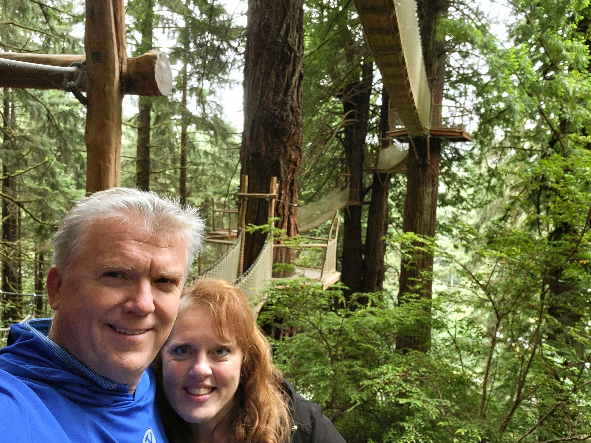

100 Temples
Our objective is to have visited 100 temples by the 200th anniversary of the restored Church, The Church of Jesus Christ of Latter-day Saints, on 06 April 2030.
Seattle Washington
Baptisms & Confirmations; Own Initiatory; Endowments; Own Endowment;

Boise Idaho
Open House; Baptisms & Confirmations; Endowments; Live Sealing;

Idaho Falls Idaho
Baptisms & Confirmations; Endowment; Live Sealing

Provo Utah (og)
Baptisms & Confirmations; Initiatory; Endowments; Sealings

Spokane Washington
Dedication; Baptisms & Confirmations; Initiatories; Endowments;

Payson Utah
Endowments; Initiatories; Sealings; Live Sealings; Baptisms & Confirmations; Cleanings;

Oakland California
Endowment; Live Sealing;

Jordan River Utah
Own Sealing; Open House; Endowment;

Portland Oregon
Baptism; Initiatory; Endowments; Sealing; Live Sealing;

Manti Utah
Pageant, Endowments; Open House

Brigham City Utah
Open House;

Logan Utah
Endowment; Live Sealing;

St. George Utah
Endowment; Open House; Live Sealing

Mount Timpanogos Utah
Endowments; Live Sealing

Oquirrh Mountain Utah
Endowment;

Draper Utah
Endowment;

Bountiful Utah
Endowment; Live Sealings;

Salt Lake City Utah
Endowments; Live Sealings

Laie Hawaii
Endowment;

Provo City Center Utah
Baptisms & Confirmations; Initiatories; Endowments; Sealings; Live Sealing;


Arizona (og)
Endowment;

Columbia River Washington
Open House; Endowment; Live Sealing

Las Vegas Nevada
Endowments;

Cedar City Utah
Endowment;

Paris France
Endowment;

Rexburg Idaho
Endowment;

Saratoga Springs Utah
Open House; Endowment
Meridian Idaho
Live Sealings;
Orem Utah
Baptism; Endowments; Sealing;
Red Cliffs Utah
Endowment
Taylorsville Utah
Open House; Endowment
Layton Utah
Open House
Moses Lake Washington
Open House;
Vernal Utah
Endowment;

Tegucigalpa Honduras
Endowment;

Ogden Utah
Endowment;

Frankfurt Germany
Endowment;

Feather River California
Endowment;
Sacramento California
Sealings;

Fort Collins Colorado
Endowment;

Denver Colorado
Sealings;

Snowflake Arizona
Initiatories;

Tucson Arizona
Sealings;


Gilbert Arizona
Endowment;

Mesa Arizona (n)
Sealings;

Phoenix Arizona
Endowment;


Deseret Peak Utah
Endowment;
Newport Beach California
Endowment;

Redlands California
Sealings;

Los Angeles California
Endowment;

Travel Plans and Other Past Visits
Utah (Next 5 Years)
- Monticello
- Manti (new - 4 stage)
- Syracuse (early-2025)
- Lindon (mid-2025)
- Ephraim (late 2025)
- Smithfield (mid-2026)
- Provo Utah Rock Canyon (late 2027)
- Price (? 2030)
- Heber Valley (? 2030)
- Lehi (? 2030)
- West Jordan (? 2030)
Eastern USA (2025)
- Pittsburgh
- Philadelphia
- Hartford
- Manhattan New York
- Boston
- Harrisburg *
Southeast Idaho (2026)
- Pocatello Idaho
- Star Valley (Wyoming)
- Burley Idaho (early 2025)
- Twin Falls Idaho
- Montpelier Idaho (late 2025)
- Teton River Idaho (mid 2027)
Europe (2027-2030)
- London England
- Preston England
- The Hague Netherlands
- Rome Italy
- Bern Switzerland
- Birmingham England *
- Brussels Belgium *
- Milan Italy *
Virginia (2028)
- Washington D.C.
- Winchester Virginia *
- Richmond Virginia *
- Roanoke Virginia *
- Raleigh North Carolina
Visited Temple Grounds
- Washington D.C.
- Manhattan New York
- Rome Italy
- Nashville Tennessee
- The Hague Netherlands
- San Diego California
- Bern Switzerland
- Helena Montana
- San Pedro Sula Honduras
- Gila Valley Arizona